RCP Coverage Tools
Note: RCP-specific coverage prediction tools: Best Server Visualization, RF Prediction (Narrowband/Broadband/WiFi), FWA RF Prediction, Quick Prediction, Radar Prediction, Compare Predictions, Optimal Site Positions, View Statistics, Network Manager.
9.2 Best Server Visualization
This tool is designed to generate network object names for the Best Server raster. Loading the Best Server raster with attribute information into the Table of Contents can be time-consuming after RF prediction,
audibility prediction, or other analyses. To streamline this process, we have introduced a separate tool that
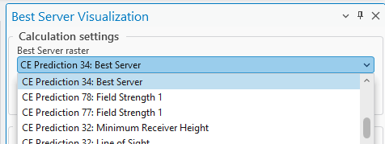
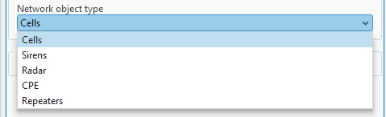
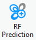
efficiently generates additional information for the Best Server raster. The tool allows users to define the network object type and select the prediction raster (Best Server).-
Select calculation result.
-
Select network object type. Press Run to generate object names for selected prediction raster.
9.3 RF Prediction
Cells are automatically divided into sections based on the technology attribute. Select cells on the map and click the button to open the RF Prediction dialogue. Based on the selection, the cells will be divided into technologies.
| Parameter | Description |
|---|---|
| Calculation Name | The name of the calculation will be displayed in the CE Calculation Task List . |
| Open raster after completion | Displays the prediction visualization (raster) after successful prediction calculation. |
| Recalculate Objection Position | Review current X/Y and Longitude/Latitude values in selected Cells table, and correct them if these values are different to object’s geometry. |
| Calculate 3D | Run calculations in different receiver heights and after completion creates single Voxel file to visualize Field Strength values in 3D scene. |
| Run | Starts the prediction calculation. |
9.3.1 Narrowband 2G (GSM/CDMA-850/TETRA/P-25)
Resolution Resolution for raster calculations. The output rasters will be produced with the indicated cell size. Best server count Option to calculate up to 5 best servers. The prediction rasters show the 1st, 2nd, 3rd, and so on strongest
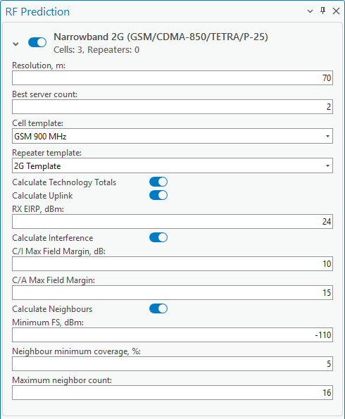
signal sources. Cell Template Option to use the parameters from the template if the cell misses the required parameters. Repeater Template Option to use the parameters from the template if repeaters are selected and they are missing the required parameters. Calculate Technology Totals Combines all resulting Field Strength rasters into a singular Field Strength raster. Calculate Uplink Option to calculate the Uplink signal strength. RX EIRP, dBm The power that the receiving antenna can capture from the transmitted signal in dBm. Calculate InterferenceCalculates the interference for 2G cells. For this calculation, the C/I and C/A thresholds must be defined. C/I Max Field Margin, dB The corresponding channel’s signal interference if the first and the second strongest signals differ by less than or equal to 10 dBm. C/A Max Field Margin, dB The neighboring channel’s signal interference if the first and the second strongest signals differ by less than or equal to 10 dBm. Calculate Neighbours Enable cell neighbour matrix calculation. Neighbour relationships between cells are determined based on: • Minimum FS threshold (dBm) – ensures neighbours are only counted if they meet a minimum signal level. • Neighbour minimum coverage (%) – sets the minimum overlap percentage required for a cell to qualify as a neighbour. • Maximum neighbour count – limits the number of neighbours assigned to each cell. The results include a visual neighbour matrix showing connections between cells with coloured link lines. For each calculated cell: • Frequency group (MHz) • Covered area (km²) • Neighbouring cells with: o Relation type (e.g., Intra-Frequency) o Overlap area (in km²) o Overlap percentage (%)
Available coverage rasters • Received signal level raster in dBm, within the channel bandwidth appropriate to this technology. It is possible to calculate separately the rasters for the 1st, 2nd, 3rd, 4th, and 5th strongest signal levels,
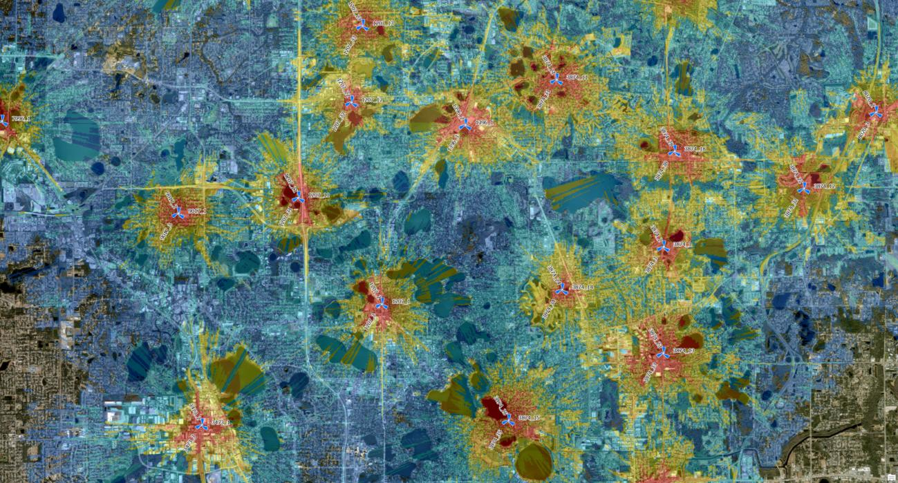
and it depends on the count defined in the Best server count option. • The best server raster shows the identification of cells generating the strongest signals at each pixel. Raster count depends on the Best server count parameter value specified by the user. o 1st best server shows the serving cell with the strongest field strength. o 2nd best server shows the second strongest field strength cell identification. o 3rd best server shows the third strongest field strength cell identification. o 4th best server shows the fourth strongest field strength cell identification. o 5th best server shows the fifth strongest field strength cell identification. • C/I rasters show Carrier-to-interference ratio in dB, to account for inter-cell interference from nearby cells that utilize the same carrier. • C/A raster shows Carrier-to-Adjacent interference ratio in dB, to account for inter-cell interference from nearby cells that operate the adjacent carrier (adjacent frequency channel). • Uplink Field Strength raster shows receiver signal strength in dBm.9.3.2 Broadband 3G (UMTS/CDMA)
Resolution Resolution for raster calculations. The output rasters will be produced with the indicated cell size. Best server count Option to calculate up to 5 best servers. The prediction rasters show the 1st, 2nd, 3rd, and so on strongest
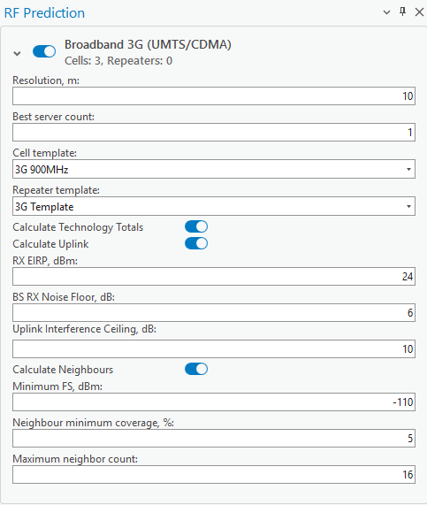
signal sources. Cell Template Option to use the parameters from the template if the cell misses the required parameters. Repeater Template Option to use the parameters from the template if repeaters are selected and they are missing the required parameters. Calculate Technology Totals Combines all resulting Field Strength rasters into a singular Field Strength raster. Calculate Uplink Option to calculate the Uplink signal strength. RX EIRP, dBm The power that the receiving antenna can capture from the transmitted signal in dBm. BS RX Noise Floor BS RX Noise Floor refers to the minimum power level of unwanted noise or interference at the receiver atthe base station. Uplink Interference Ceiling the maximum allowable level of interference in the uplink direction of a wireless communication system before it adversely affects the system's performance or capacity. Calculate Neighbours Enable cell neighbour matrix calculation. Neighbour relationships between cells are determined based on: • Minimum FS threshold (dBm) – ensures neighbours are only counted if they meet a minimum signal level. • Neighbour minimum coverage (%) – sets the minimum overlap percentage required for a cell to qualify as a neighbour. • Maximum neighbour count – limits the number of neighbours assigned to each cell. The results include a visual neighbour matrix showing connections between cells with coloured link lines. For each calculated cell: • Frequency group (MHz) • Covered area (km²) • Neighbouring cells with: o Relation type (e.g., Intra-Frequency) o Overlap area (in km²) o Overlap percentage (%)
• The best server raster shows the identification of cells generating the strongest signals at each
 pixel. Raster count depends on the Best server count parameter value specified by the user.
o 1st best server shows the serving cell with the strongest field strength.
o 2nd best server shows the second strongest field strength cell identification.
o 3rd best server shows the third strongest field strength cell identification.
o 4th best server shows the fourth strongest field strength cell identification.
o 5th best server shows the fifth strongest field strength cell identification.
• Uplink Field Strength raster shows receiver signal strength in dBm.
pixel. Raster count depends on the Best server count parameter value specified by the user.
o 1st best server shows the serving cell with the strongest field strength.
o 2nd best server shows the second strongest field strength cell identification.
o 3rd best server shows the third strongest field strength cell identification.
o 4th best server shows the fourth strongest field strength cell identification.
o 5th best server shows the fifth strongest field strength cell identification.
• Uplink Field Strength raster shows receiver signal strength in dBm.
9.3.3 Broadband 4G (LTE/BWA/WiMAX)
Resolution Resolution for raster calculations. The output rasters will be produced with the indicated cell size. Best server count Option to calculate up to 5 best servers. The prediction rasters show the 1st, 2nd, 3rd, and so on strongest
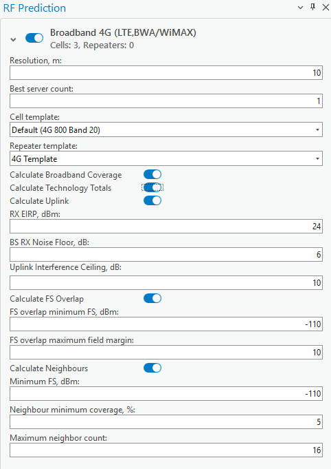
signal sources. Cell Template Option to use the parameters from the template if the cell misses the required parameters. Repeater Template Option to use the parameters from the template if repeaters are selected and they are missing the required parameters. Calculate Broadband Coverage Use this option to calculate:• RSSI • RSRQ • RS-SINR • DL Throughput • Max. DL Throughput • DL CQI Calculate Technology Totals Combines all resulting Field Strength rasters into a singular Field Strength raster. Calculate Uplink Option to calculate: Uplink Field Strength Uplink Best Server Uplink SINR Uplink Throughput Uplink Max. Throughput Uplink CQI RX EIRP, dBm The power that the receiving antenna can capture from the transmitted signal in dBm. BS RX Noise Floor BS RX Noise Floor refers to the minimum power level of unwanted noise or interference at the receiver at the base station. Uplink Interference Ceiling the maximum allowable level of interference in the uplink direction of a wireless communication system before it adversely affects the system's performance or capacity. Calculate FS Overlap This calculation in Cellular Expert calculates the geographical areas where two different cells provide similar signal strength. Specifically, it identifies regions where the absolute difference between the field strengths of Cell 1 and Cell 2 is less than a defined threshold (e.g., 10 dB). This analysis is useful for understanding coverage overlaps and potential handover zones between cells. Field strength overlap can now be calculated using: • Minimum FS threshold (dBm) – defines the lowest acceptable field strength for overlap consideration. • Maximum field margin (dB) – sets the tolerance range for overlap levels. The output is a raster layer that displays the degree of overlap in dB ranges (e.g., <3 dB, 3–5 dB, 5–7 dB, 7–9 dB, >9 dB). This enables planners to quickly identify areas of strong cell overlap, potential handover zones, or interference-prone regions.
Calculate Neighbours Enable cell neighbour matrix calculation. Neighbour relationships between cells are determined based on: • Minimum FS threshold (dBm) – ensures neighbours are only counted if they meet a minimum signal level. • Neighbour minimum coverage (%) – sets the minimum overlap percentage required for a cell to qualify as a neighbour. • Maximum neighbour count – limits the number of neighbours assigned to each cell. The results include a visual neighbour matrix showing connections between cells with coloured link
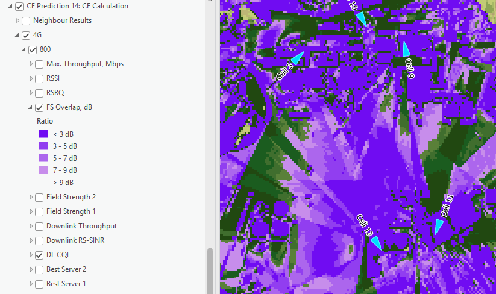
lines. For each calculated cell: • Frequency group (MHz) • Covered area (km²) • Neighbouring cells with: o Relation type (e.g., Intra-Frequency) o Overlap area (in km²) o Overlap percentage (%)Available coverage rasters • Reference Signal Receive Power (RSRP) raster in dBm, as measured for a reference OFDMA sub- carrier bandwidth. It is possible to calculate the rasters separately for the 1st, 2nd, 3rd, 4th, and 5th strongest signal levels and depends on the count defined in the Best server count option. • The best server raster identifies cells that generate the strongest signals at each pixel. Raster count
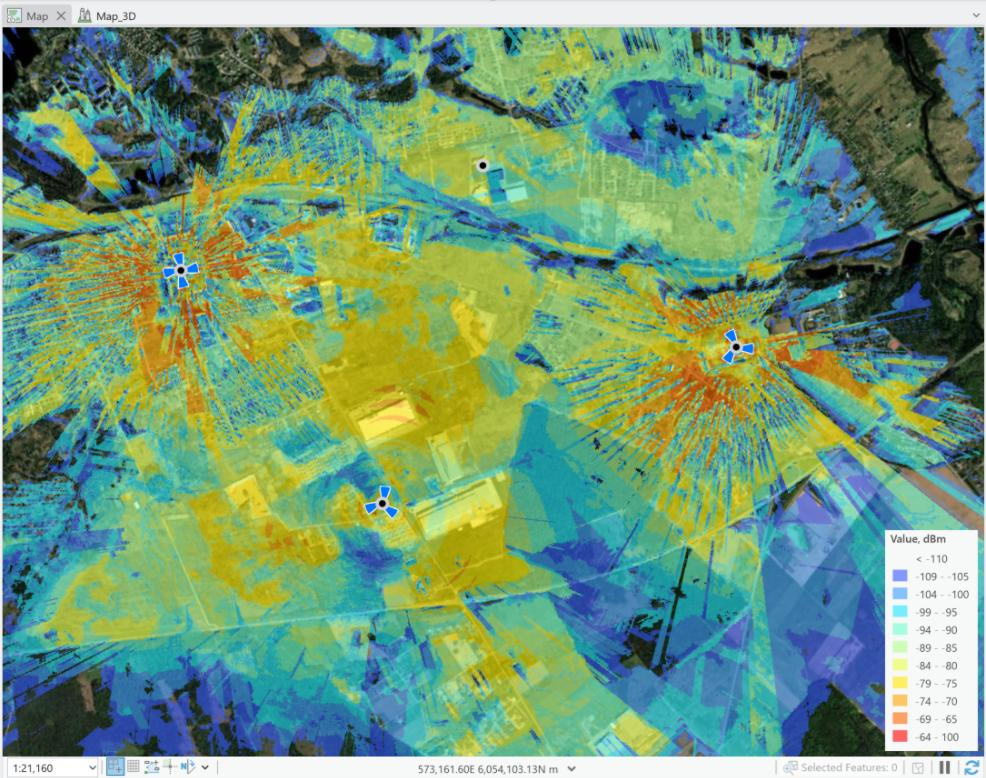
depends on the Best server count parameter value specified by the user.o 1st best server shows the serving cell with the strongest field strength. o 2nd best server shows the second strongest field strength cell identification.
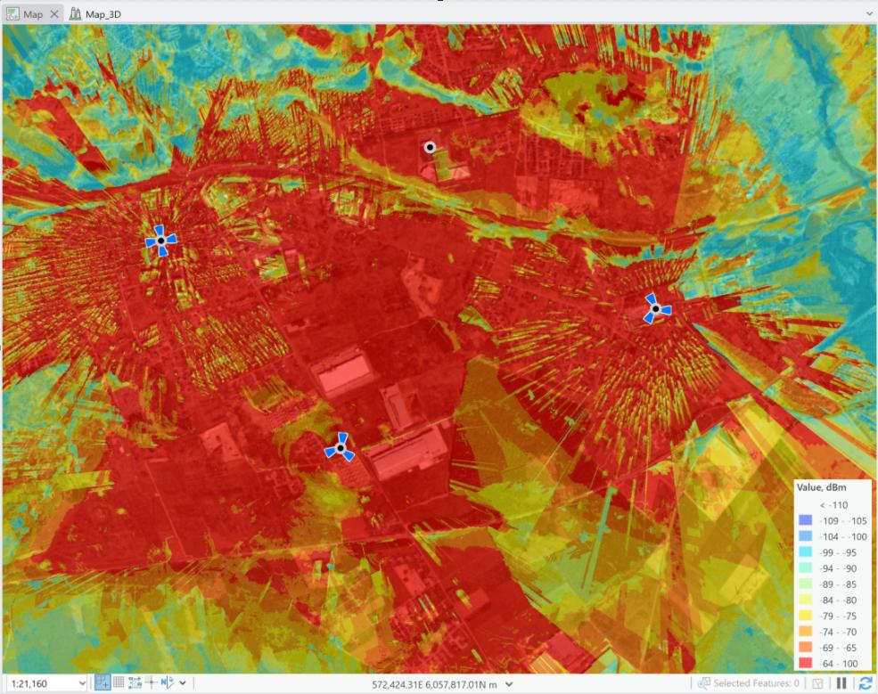
o 3rd best server shows the third strongest field strength cell identification. o 4th best server shows the fourth strongest field strength cell identification. o 5th best server shows the fifth strongest field strength cell identification. • Received Signal Strength Indicator (RSSI) estimated values' raster in dBm. • Reference Signal Receive Quality (RSRQ) estimated values’ raster in dB.• Reference Signal’s – Signal to Interference and Noise Ratio (RS-SINR) estimated values’ raster in

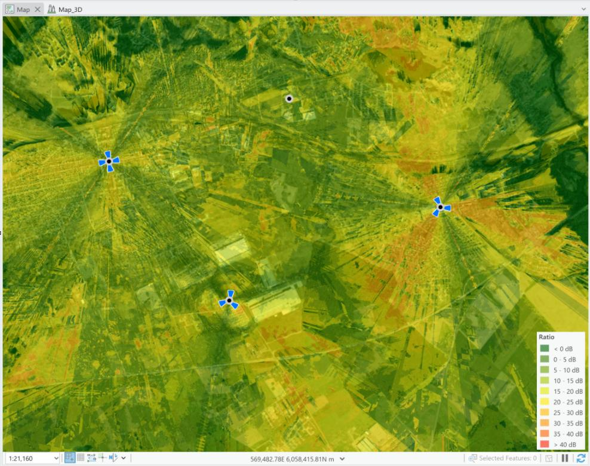
dB. • CQI identification values.• Estimated achievable (including Cell Load) Downlink Throughput values’ raster in Mbps.

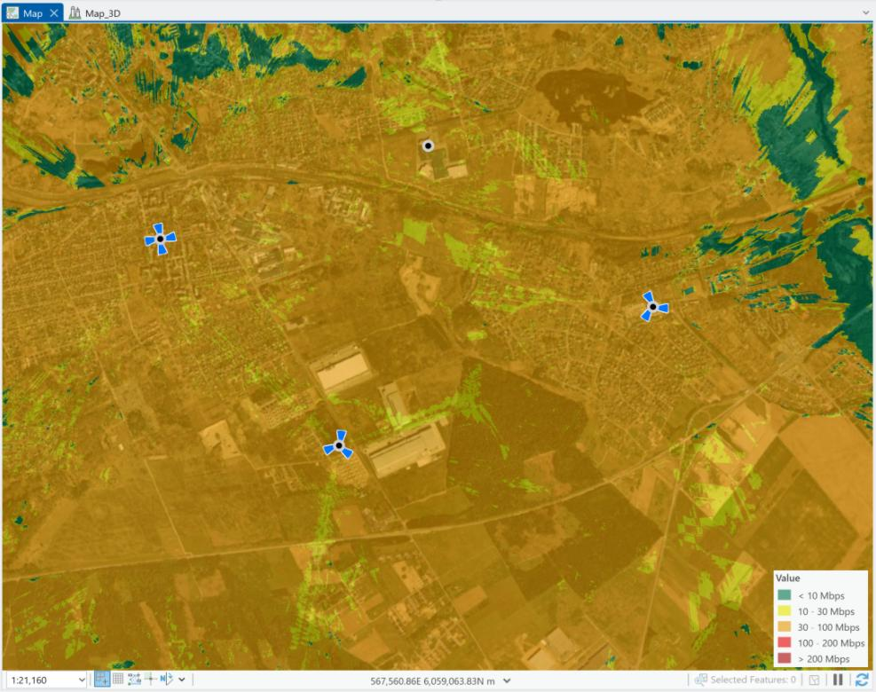
• Field Strength Overlap• Maximum (without Cell Load) Downlink Throughput values’ raster in Mbps.


• Uplink Field strength raster in dBm.

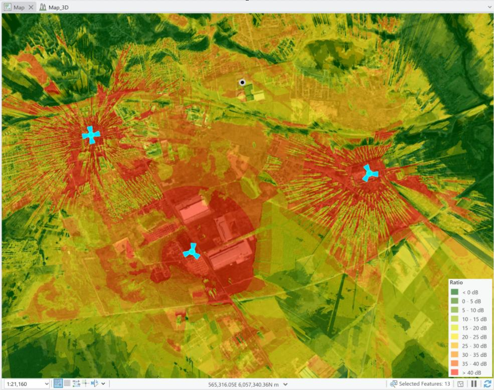
• Uplink SINR raster in dB • Uplink CQI identification.• Uplink Throughput in Mbps
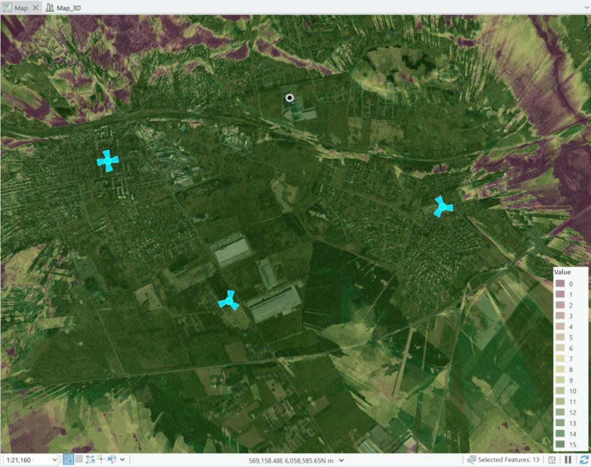
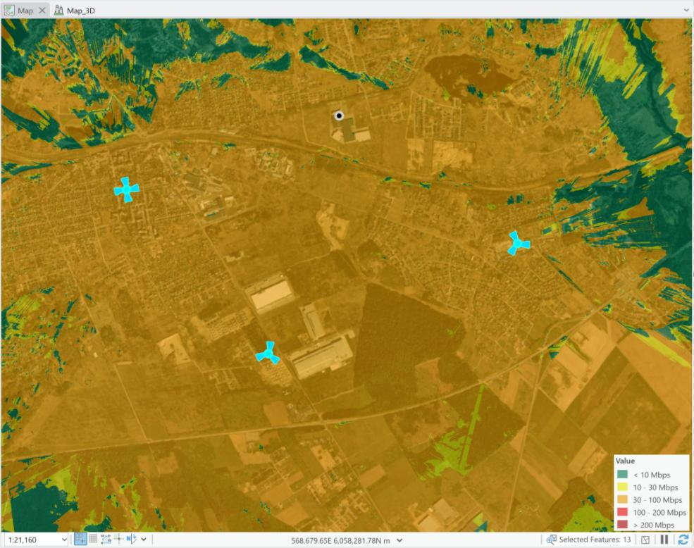
9.3.4 Broadband 5G (NR/CBRS)
Resolution Resolution for raster calculations. The output rasters will be produced with the indicated cell size. Best server count Option to calculate up to 5 best servers. The prediction rasters show the 1st, 2nd, 3rd, and so on strongest
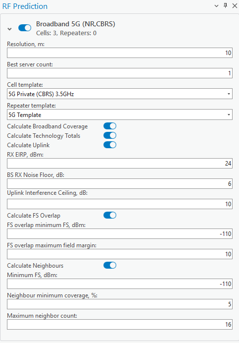
signal sources. Cell Template Option to use the parameters from the template if the cell misses the required parameters. Repeater Template Option to use the parameters from the template if repeaters are selected and they are missing the required parameters. Calculate Broadband Coverage Use this option to calculate:• RSSI • RSRQ • RS-SINR • DL Throughput Calculate Technology Totals Combines all resulting Field Strength rasters into a singular Field Strength raster. Calculate Uplink Option to calculate: Uplink Field Strength Uplink Best Server Uplink SINR Uplink Throughput Uplink Max. Throughput Uplink CQI RX EIRP, dBm The power that the receiving antenna can capture from the transmitted signal in dBm. BS RX Noise Floor BS RX Noise Floor refers to the minimum power level of unwanted noise or interference at the receiver at the base station. Uplink Interference Ceiling the maximum allowable level of interference in the uplink direction of a wireless communication system before it adversely affects the system's performance or capacity. Calculate FS Overlap This calculation in Cellular Expert calculates the geographical areas where two different cells provide similar signal strength. Specifically, it identifies regions where the absolute difference between the field strengths of Cell 1 and Cell 2 is less than a defined threshold (e.g., 10 dB). This analysis is useful for understanding coverage overlaps and potential handover zones between cells. Field strength overlap can now be calculated using: • Minimum FS threshold (dBm) – defines the lowest acceptable field strength for overlap consideration. • Maximum field margin (dB) – sets the tolerance range for overlap levels. The output is a raster layer that displays the degree of overlap in dB ranges (e.g., <3 dB, 3–5 dB, 5–7 dB, 7–9 dB, >9 dB). This enables planners to quickly identify areas of strong cell overlap, potential handover zones, or interference-prone regions. Calculate Neighbours Enable cell neighbour matrix calculation. Neighbour relationships between cells are determined based on: • Minimum FS threshold (dBm) – ensures neighbours are only counted if they meet a minimum signal level. • Neighbour minimum coverage (%) – sets the minimum overlap percentage required for a cell to
qualify as a neighbour. • Maximum neighbour count – limits the number of neighbours assigned to each cell. The results include a visual neighbour matrix showing connections between cells with coloured link lines. For each calculated cell: • Frequency group (MHz) • Covered area (km²) • Neighbouring cells with: o Relation type (e.g., Intra-Frequency) o Overlap area (in km²) o Overlap percentage (%) Available coverage rasters • Equivalent Reference Signal Receive Power (RSRP) raster in dBm, as measured for a reference OFDMA sub-carrier bandwidth. It is possible to calculate separately the rasters for the 1st, 2nd, 3rd, 4th, and 5th strongest signal levels and it depends on the count defined in the Best server count option.
• The best server raster identifies cells that generate the strongest signals at each pixel. Raster count
 depends on the Best server count parameter value specified by the user.
o 1st best server shows the serving cell with the strongest field strength.
o 2nd best server shows the second strongest field strength cell identification.
o 3rd best server shows the third strongest field strength cell identification.
o 4th best server shows the fourth strongest field strength cell identification.
o 5th best server shows the fifth strongest field strength cell identification.
• Received Signal Strength Indicator (RSSI) estimated values' raster in dBm.
depends on the Best server count parameter value specified by the user.
o 1st best server shows the serving cell with the strongest field strength.
o 2nd best server shows the second strongest field strength cell identification.
o 3rd best server shows the third strongest field strength cell identification.
o 4th best server shows the fourth strongest field strength cell identification.
o 5th best server shows the fifth strongest field strength cell identification.
• Received Signal Strength Indicator (RSSI) estimated values' raster in dBm.
• Reference Signal Receive Quality (RSRQ) estimated values’ raster in dB. • Reference Signal’s – Signal to Interference and Noise Ratio (RS-SINR) estimated values’ raster in

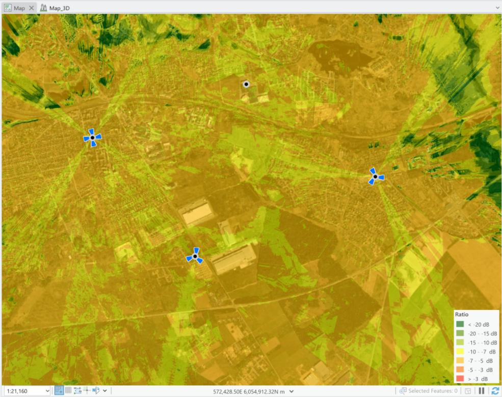
dB.• CQI identification values. • Estimated achievable (including Cell Load) Downlink Throughput values’ raster in Mbps.

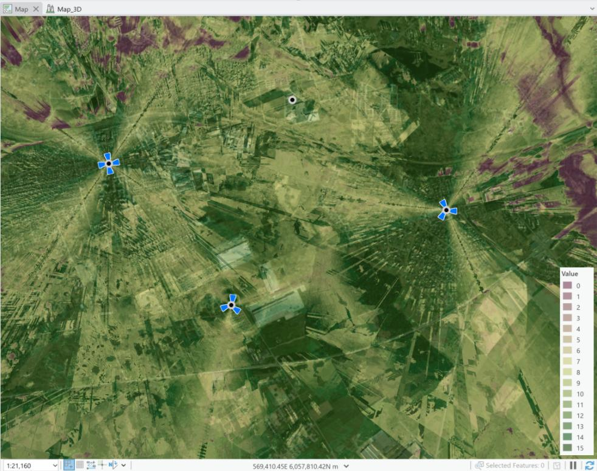
• Maximum (without Cell Load) Downlink Throughput values’ raster in Mbps.

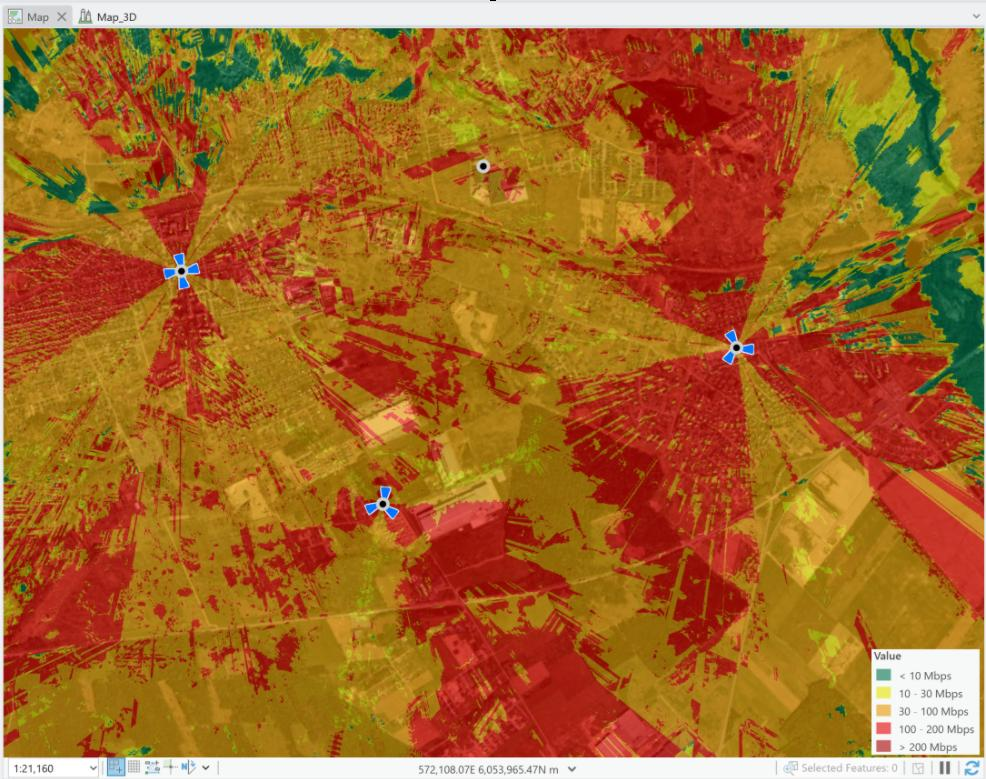
• Field Strength Overlap • Uplink Field strength raster in dBm.
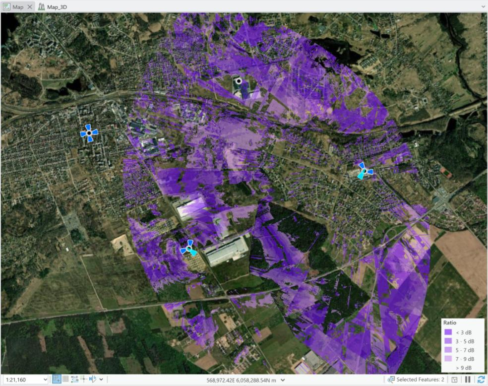
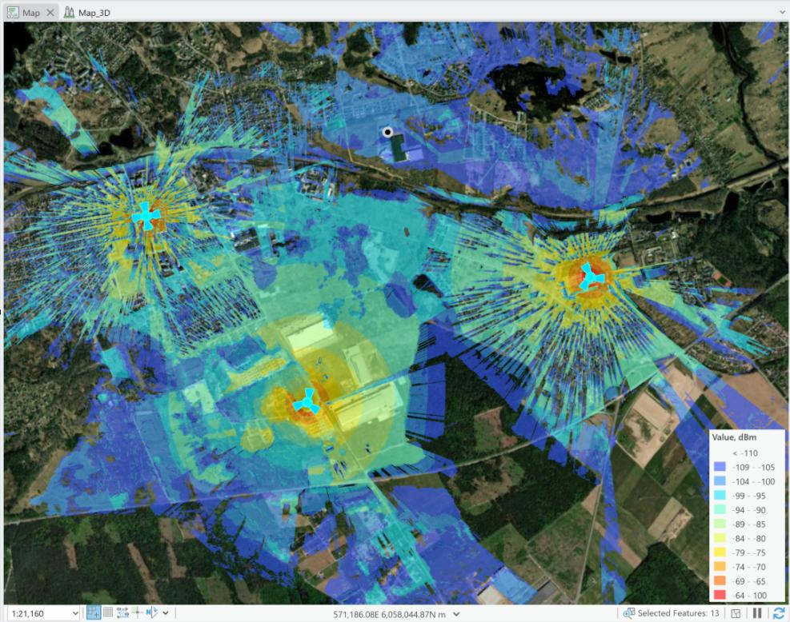
• Uplink SINR raster in dB• Uplink CQI identification.

 • Uplink Throughput in Mbps
• Uplink Throughput in Mbps

9.3.5 WiFi
Resolution Resolution for raster calculations. The output rasters will be produced with the indicated cell size. Best server count Option to calculate up to 5 best servers. The prediction rasters show the 1st, 2nd, 3rd, and so on strongest
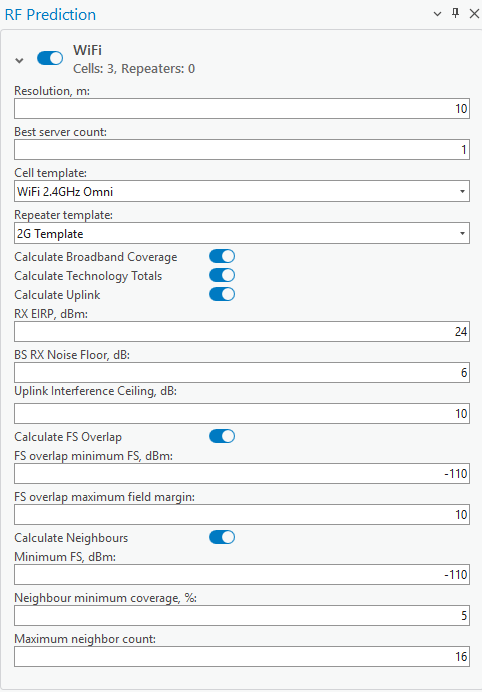
signal sources. Cell template Option to use the parameters from the template if the cell misses the required parameters. Calculate Broadband Coverage Use this option to calculate: • RSSI; • RSRQ; • RS-SINR; • DL Throughput. Calculate Technology TotalsMerges all technologies that share the same Field Strength. The result is a separate group of rasters. | Parameter | Description | |---|---| | Calculate uplink | Option to calculate the Uplink Signal Throughput - the speed at which data is transferred. Measured in Mb/s. | | RX EIRP | The EIRP value of the receiver in dBm. | | BS RX Noise Floor | Best Server receiver’s lowest noise level. No values below this level will be included in the calculation. | | Uplink Interference Ceiling | Uplink’s interference highest value. No values above this point will be included in the calculation. | Calculate FS Overlap This calculation in Cellular Expert calculates the geographical areas where two different cells provide similar signal strength. Specifically, it identifies regions where the absolute difference between the field strengths of Cell 1 and Cell 2 is less than a defined threshold (e.g., 10 dB). This analysis is useful for understanding coverage overlaps and potential handover zones between cells. Field strength overlap can now be calculated using: • Minimum FS threshold (dBm) – defines the lowest acceptable field strength for overlap consideration. • Maximum field margin (dB) – sets the tolerance range for overlap levels. The output is a raster layer that displays the degree of overlap in dB ranges (e.g., <3 dB, 3–5 dB, 5–7 dB, 7–9 dB, >9 dB). This enables planners to quickly identify areas of strong cell overlap, potential handover zones, or interference-prone regions. Calculate Neighbours Enable cell neighbour matrix calculation. Neighbour relationships between cells are determined based on: • Minimum FS threshold (dBm) – ensures neighbours are only counted if they meet a minimum signal level. • Neighbour minimum coverage (%) – sets the minimum overlap percentage required for a cell to qualify as a neighbour. • Maximum neighbour count – limits the number of neighbours assigned to each cell. The results include a visual neighbour matrix showing connections between cells with coloured link lines. For each calculated cell: • Frequency group (MHz) • Covered area (km²) • Neighbouring cells with: o Relation type (e.g., Intra-Frequency) o Overlap area (in km²)
o Overlap percentage (%) Available coverage rasters • Equivalent Reference Signal Receive Power (RSRP) raster in dBm, as measured for a reference OFDMA sub-carrier bandwidth. It is possible to calculate separately the rasters for the 1st, 2nd, 3rd, 4th, and 5th strongest signal levels and it depends on the count defined in the Best server count option.
• The best server raster shows the identification of cells that generate the strongest signals at each pixel. Raster count depends on the Best server count parameter value specified by the user. o 1st best server shows the serving cell with the strongest field strength. o 2nd best server shows the second strongest field strength cell identification. o 3rd best server shows the third strongest field strength cell identification. o 4th best server shows the fourth strongest field strength cell identification. o 5th best server shows the fifth strongest field strength cell identification. • RSSI raster in dBm.
9.4 FWA RF Prediction
The FWA RF Prediction tool enables batch radio profile calculations to quickly estimate link performance from a single transmitter to multiple CPEs or to a set of selected receiver points. For each receiver point,
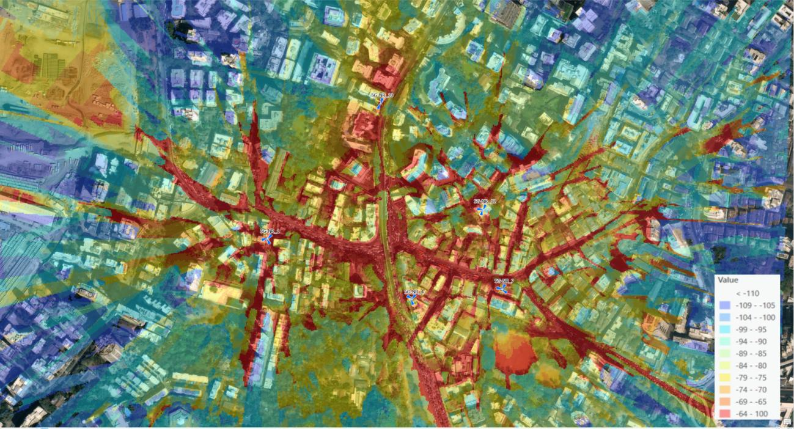
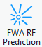
the tool computes and displays Downlink FS, Uplink FS, FWA Downlink RSL, and FWA Uplink RSL. These outputs enable a quick assessment of link viability and quality at each location. Results for each receiver point are listed in a structured table, allowing comparison of link performance across multiple points. Click the button to open the FWA RF Prediction dialogue. This tool is designed for rapid evaluation of coverage quality for potential customer sites in FWA networks, as well as batch link feasibility checks for network planning and rollout, validation of antenna placement and orientation impacts on service availability, and comparative performance analysis across multiple CPE configurations.One transmitter can be selected at a time, and the receiver point layer can either be a point feature layer added to the map or CPE network objects. If no receiver points are selected on the map, all points are used for calculations. A CPE template can be used to fill in missing values from the receiver point layer. Furthermore, receiver point fields can be mapped from the receiver point attributes, or alternatively, used from CPE template. Once all fields are selected, press the Run button to perform the calculations. The result is the table showing
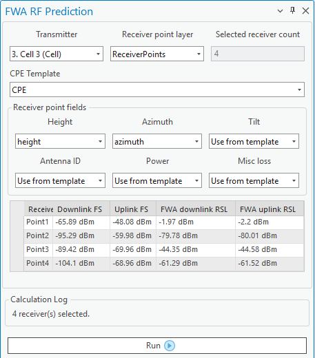
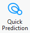
Downlink/Uplink FS, and FWA downlink/uplink RSL values for each receiver point.9.5 Quick Prediction
Click the button to open the Quick Prediction dialogue. Quick Prediction is a tool that lets you select a point on the map and make a prediction without the need to create a cell. The selected point is represented as a brown dot on the map. Quick prediction also lets you select a cell as the point, meaning that you can also make quick predictions with the created cells.
When the Quick Prediction button is pressed, a map tool will be activated which will let you select a point
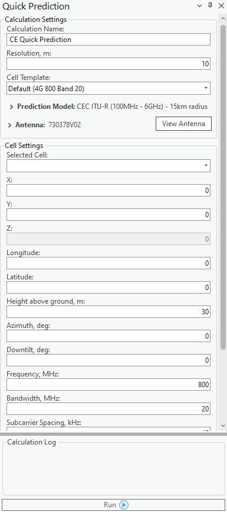
on the map. Upon selecting this point and pressing the Calculate button, a visual representation of the calculation will be rendered on the map and the relevant data presented in the CE Calculation Task List. D Quick Prediction Parameters | Parameter | Description | |---|---| | Calculation Name | Name of the calculation that will be displayed in the CE Calculation Task List | | Resolution | Resolution for raster calculations. The output rasters will be produced with the indicated cell size. | | Cell Template | Cell Template will be used in the prediction calculations. | | Prediction Model | Prediction models that will be used in the prediction calculations. | | Antenna | Antenna that will be used in the prediction calculations. || Parameter | Description |
|---|---|
| Selected Cell (Optional) | A cell from which the calculation will be done. |
| X | Coordinate in the projected coordinate system. |
| Y | Coordinate in the projected coordinate system. |
| Z | Coordinate in the projected coordinate system. |
| Latitude | Decimal degrees Y type coordinate in the WGS 1984 geographical coordinate system. |
| Longitude | Decimal degrees X type coordinate in the WGS 1984 geographical coordinate system. |
| Height above ground | Cell height above the ground in meters. |
| Azimuth | Cell direction from the North in degrees. |
| Downtilt | Cells vertical angle offset. |
| Frequency | The frequency value in MHz |
| Bandwidth | Value in MHz. Required for 4G and 5G technologies. For other technologies define the value as 0.015. |
| Subcarrier spacing | Value in kHz. Required for 4G and 5G technologies. For other technologies define value 15. |
| Tx MIMO | Transmitter antenna count. Available values: 1, 2, 4, 8, 16, 32 and 64. |
| Rx MIMO | Receiver antenna count. Available values: 1, 2, 4, 8, 16, 32 and 64. |
Results: • Field Strength raster in dBm
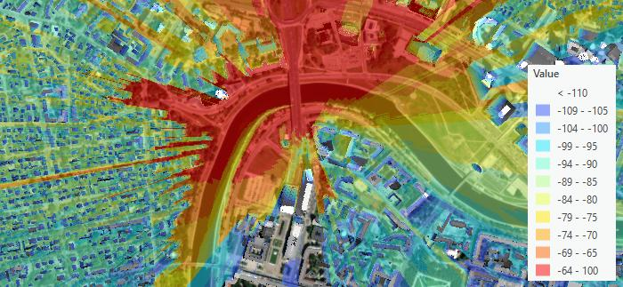
9.6 Radar Prediction
Click the button to open the Radar Prediction dialogue. Radar Prediction is a tool that lets you calculate predictions on radars. Depending on the view angle and the size of the radar, Radar Predictions will show the reach of radar signals. Radar signals may differ on various objects: drones, planes, etc. For example, drones will be identified within a smaller distance than
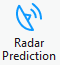
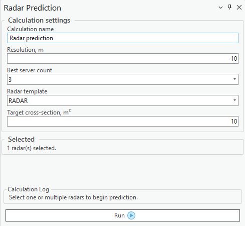
planes. Run Calculation Run the radar prediction calculations. Radar Prediction Parameters Calculation name The calculation identification Resolution The cell size is in meters.| Parameter | Description |
|---|---|
| Best Server count | Option to calculate up to 5 best servers. |
| Radar template | Template used to calculate the radar predictions. |
| Target cross-section | The radar size. |
| Selected | Current amount of selected radars. Results: Field Strength raster in dBm • |
9.7 Visibility Prediction
Visibility calculations refer to the determination of line-of-sight between transmitting and receiving antennas,
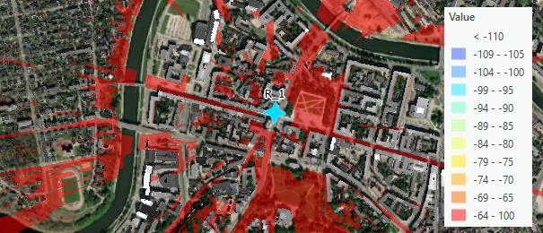
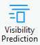
assessing whether any obstructions might impede direct signal transmission. Visibility Prediction is a tool that calculates 4 different results: • Minimum Receiver Height – the minimum height of a receiver that could be visible to the transmitter • Line of Sight – confirms whether visibility exists between the receiver and transmitter with the provided receiver height • Clearance Height – the distance from the profile that is covered or is not covered. • Best Server – the same calculation as for RF Prediction Click the button to open the Visibility Prediction dialogue.| Parameter | Description |
|---|---|
| Resolution | Cell size in meters |
| Max Radius | The maximum radius of the prediction |
| Receiver height | Receiver height above the ground. |
| Effective Earth Radius | Earth radius in kilometers, used for the calculations. |
| Layers to calculate | All present CE layers on which predictions can be performed |
| Template | A template that corresponds to the selected layers. When the layer changes the templates change as well. |
| Selected | Network objects that are present on the selected network layer. The visibility prediction will be performed on all of them. |
| Run Calculations | Starts the prediction calculation. |
Results: • Minimum Receiver Height in meters • Line of Sight – either visible (1) by the network objects or not (0)

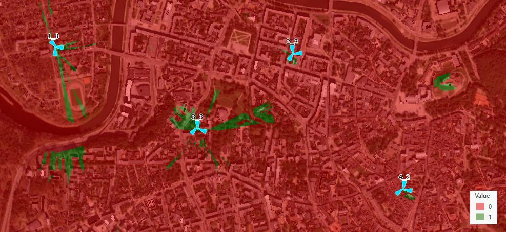
• Clearance in meters• Best Server


9.8 Compare Predictions
Compare Predictions is a tool that lets you compare the results of RF predictions with different parameters.
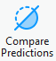
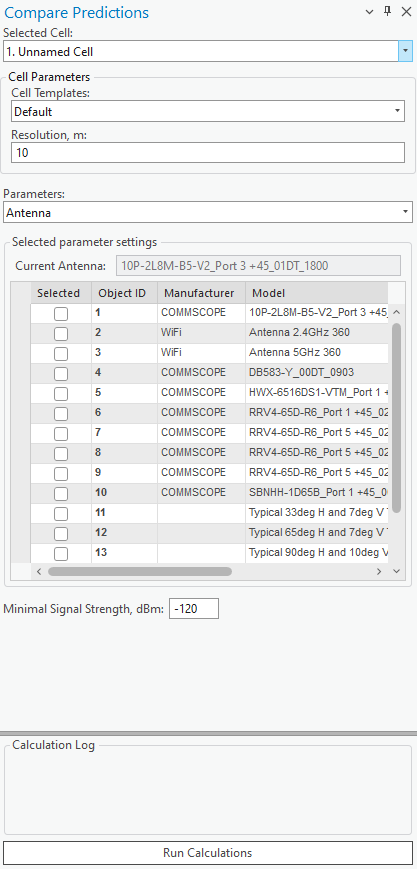
There are 4 possible parameters to choose from: Antenna, Azimuth, Tilt, and Height. When a different parameter is selected, the selected parameter settings dialog also changes. This tool is extremely useful if the user wants to quickly check which parameter creates the best possible prediction coverage. Click the button to open the Compare Prediction dialogue. | Parameter | Description | |---|---| | Selected Cell | The cell on which the predictions will be performed | | Cell Templates | Cell Templates will be used in the prediction calculations. | | Resolution | Cell size in meters | ParametersA list of 4 parameters: Antenna, Azimuth, Tilt, and Height. Select one of the parameters to execute the predictions. | Parameter | Description | |---|---| | Current Parameter | The parameter that is currently present in the cell. | | Minimal Signal Strength | Signal strength is the floor of the predictions. No signal lower than this value will be included in the calculations. | | From | The starting value of the parameter for calculations | | To | The destination value of the parameter for calculations | | Step | The increment by which the starting point will reach the destination | Run Calculation Starts the prediction calculation. If the user selects one of the results from the results table, that result will be highlighted in the bar chart as
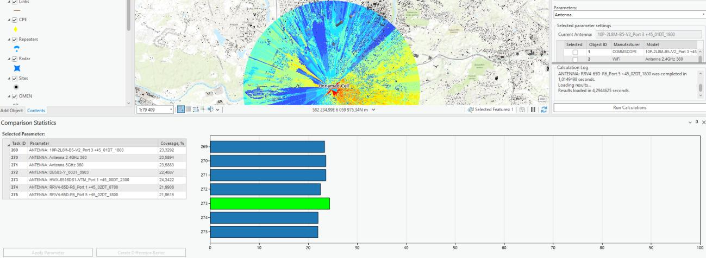
well as the corresponding prediction layer on the map. Compare Predictions also provides the possibility to create a Difference Raster – a raster that is made from two RF Prediction rasters that shows the value differences between them. If the user wants to apply the parameter that produces the biggest coverage value, he can select one of the results from the result table and press Apply Parameters.Apply Parameters Applies the selected parameter to the currently selected cell. Create Difference Raster Creates a raster that is made from two RF Prediction rasters. It shows the value differences between them.
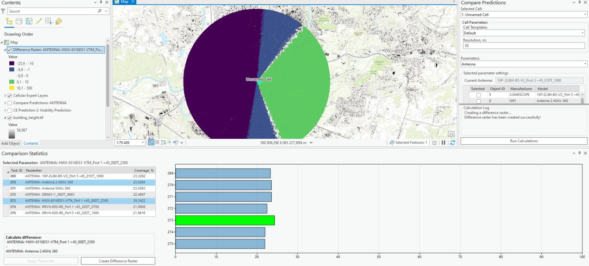
9.9 Optimal Site Positions
Optimal Site Positions is a tool that lets the user find optimal positions for a site based on specified
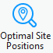
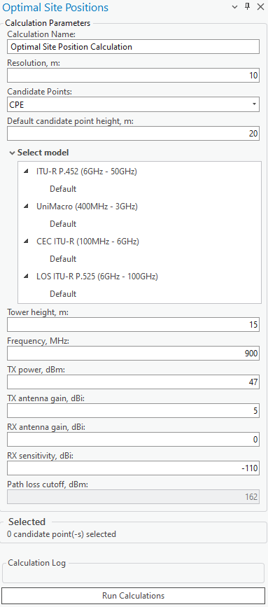
parameters. The prediction produces two rasters: • Covered Points – defines what number of points are covered in a certain pixel • Coverage Percentage – the percentage by which the pixel is covered. Meaning that 100% is a fully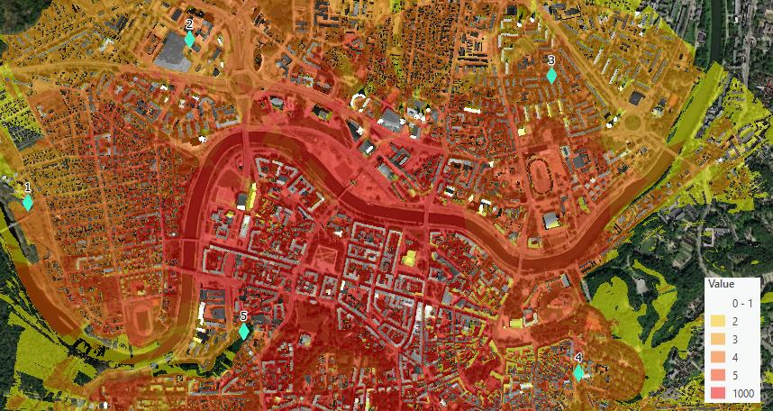
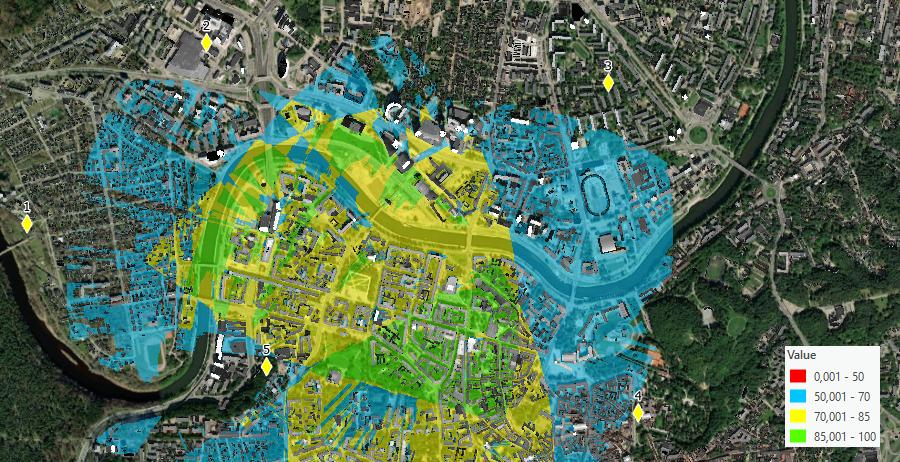
covered point Click the button to open the Optimal Site Positions dialogue.| Parameter | Description |
|---|---|
| Calculation Name | The name of the current calculation. |
| Resolution | Cell size in meters. |
| Candidate Points | The CE layers contain network objects. |
| Selected Model | The prediction model list. |
| Tower height | The height of the tower that hosts the site. |
| Frequency | The frequency value in MHz. |
| TX power | Transmitter power in dBm. |
| TX antenna gain | Transmitter gain in dBi. |
| RX antenna gain | Receiver antenna gain in dBi. |
| RX sensitivity | Receiver sensitivity in dBm. |
| Path loss cutoff | The path loss is the floor of the prediction. No path loss lower than this value will be included in the calculations. |
| Run Calculation | Starts the prediction calculation. |
Results: • Covered Points • Coverage Percentage
9.10 View Statistics
View Statistics is a tool that calculates the total coverage of a polygon based on its overall coverage (signal
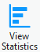
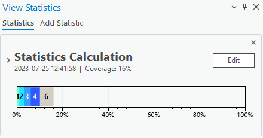
strength, dl throughput, etc.). The resulting statistics include the total coverage and individual coverage of each polygon segment. Click the button to open the View Statistics dialogue. To Add Statistics, press the “Add Statistics” tab on the dockpane.9.10.1 Statistics
When the calculation is complete, you will be redirected to the Statistics window where you can view the calculation results. The immediate expander of the calculation shows the overall coverage (in percentages) of all the polygon regions. By opening the expander, you can examine the specific regions, their population, and area coverages. You can also change the colors of the color bands by clicking the squares near the region values.
Table button View the details about the polygon areas and calculated data in a table. Also, export the table data in CSV
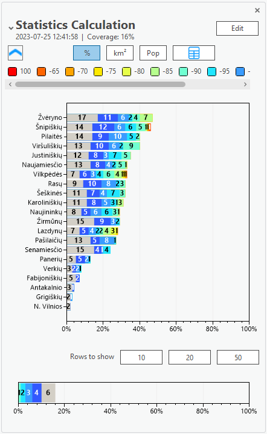
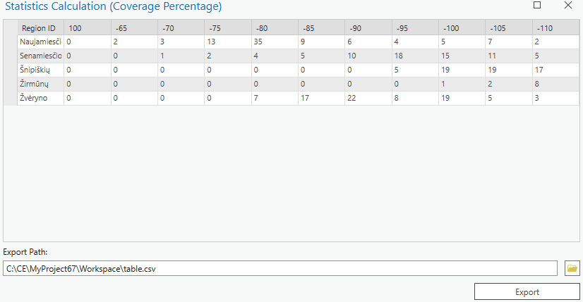
format.The button lets you edit the selected statistic. To exit edit mode and cancel all changes, click the Exit Edit Mode button.
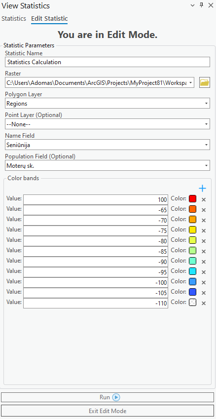
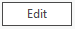
9.10.2 Add Statistics
Add Statistic Parameters | Parameter | Description | |---|---| | Statistic Name | The name of the Statistic. | | Raster | The raster layer of one of the coverage results. | | Polygon Layer | The polygon layer of which the coverage will be calculated. | | Point Layer (Optional) | Used to specify the calculation. | | Name Field | Defines the names of territories that will be displayed in the results. |
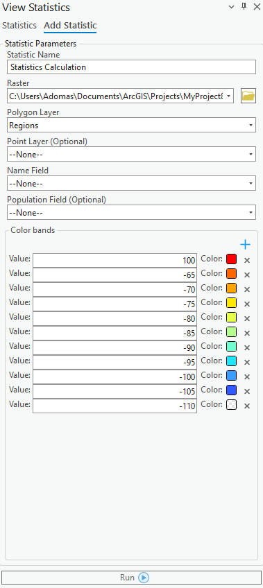
Population Field (Optional)Establishes the population field that will be used to calculate the total coverage of the population. | Parameter | Description | |---|---| | Color Bands | The color of each segment in the statistics. The color bands are automatically retrieved from the raster layer if it contains symbolization. | | + | Add a new color band | | X | Remove color band | | Run | Run the statistics calculation. |
9.11 Network Manager
Network Manager is a tool that lets you group cells and repeaters into networks based on their frequency groups and technologies. In doing so, you can easily select particular networks and do RF Calculations on them without needing to select any particular network objects. The technologies are taken from the Cells table. Network Manager tracks the changes in the technology and frequency_group fields of Cells and Repeaters tables. If the values of these fields should change, the network manager will accommodate such changes by regrouping changed parameters based on the new technologies and frequency groups. When frequency groups are modified, removed, added, or affected in any other way, the frequency group titles will change color from green to red. While the RF calculation is processing the title color will change to yellow. When the RF calculation is completed on that frequency group, the current network configuration is saved, and the title color changes back to green. Click the button to open the Network Manager dialogue. To create a network, press the “+” button on the dockpane. Add Network Parameters Name The name of the network
Technology The technology that the network will be based on. All network objects will be filtered by it in the network.
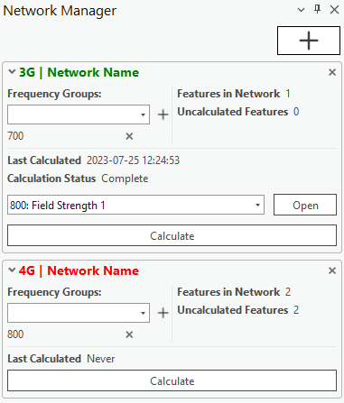
Create Network Add network to the network list. Network Manager Parameters | Parameter | Description | |---|---| | Frequency Groups | Frequency groups that share the same technology. | | Last Calculated | The last time the calculation was started | | Calculation Status | Status of the current calculation | | Selected Frequency Groups | Frequency groups on which the RF Calculations will be completed. | | Features in Network | Number of Network objects that are present in the Selected Frequency Groups. | | Uncalculated Features | Number of Network objects that have not yet been added to an RF calculation. || Parameter | Description |
|---|---|
| + | Adds frequency group to Selected Frequency Groups. |
| X (inside the network) | Removes frequency group from Selected Frequency Groups. |
| X (in the network title) | Removes network from the network list. |
| Calculate | Opens the RF calculation dialog with the selected network objects |
| Calculation Name | Antenna Visibility prediction identification. |
| Resolution, m | Resolution of the visibility prediction rasters. |
| Cell template | Cell template for visibility prediction calculations. |
| Attenuation threshold, db |
Maximum allowable signal loss for determining effective signal visibility. Select the cells on the map and press the Run button to perform the antenna visibility calculations. Once the calculations are performed, a new group layer is added with Line of Sight Clearance, Pattern Clearance,
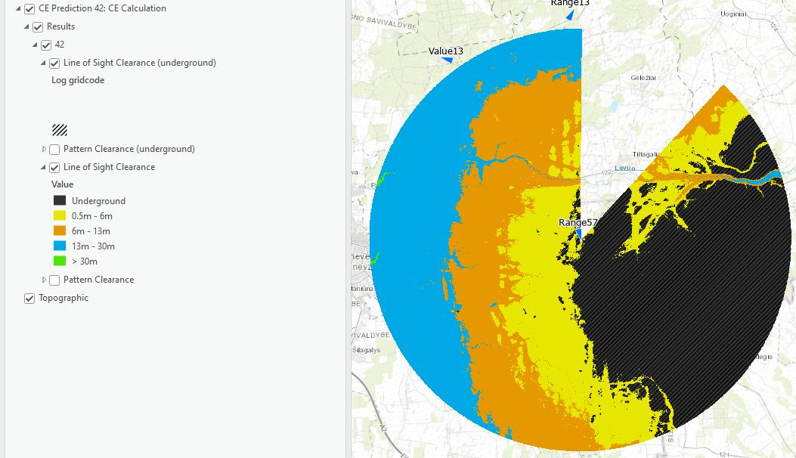
Line of Sight Clearance (underground), and Pattern Clearance (underground) layers. Toggling either the Line of Sight Clearance or Pattern Clearance layers shows the legend according to the values in the raster. Additional “underground” polygon groups are drawn with hatch fill to indicate the values of 0 (blocked by elevation or an obstacle) for each layer. The default Line of Sight Clearance and Pattern Clearance layer files (.lyr) can be changed in Workspace Properties, under the Visualization tab and the Visibility category.